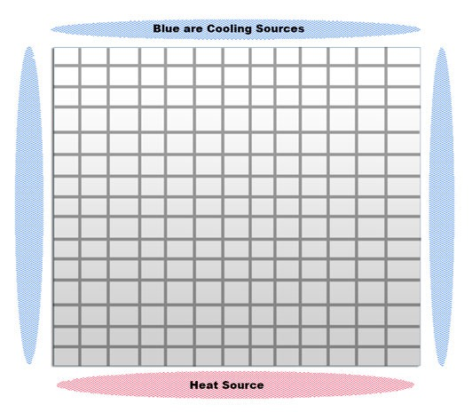
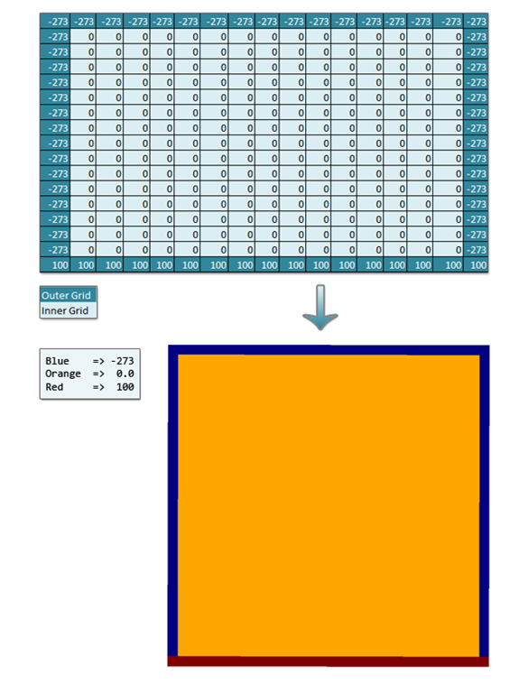
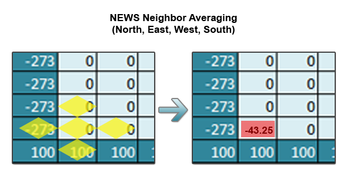

Grid computations are commonly used in the scientific community to model a variety of physical systems. These systems are modeled by approximating the solutions to the partial differential equations that describe the phenomena that is being studied. In this series of posts, I’ll be focusing on a solver I wrote for elliptic PDE’s like Laplace’s equation and then use it to solve the heat equation (a PDE that models the distribution of heat over time). For anyone interested in a more advanced explanation on these topics, I’d recommend outside research (and then repost your best resources to the blog comments for me to look at!).
So, how is a 2D grid related to the physical world and heat? Well, let’s imagine a 2D sheet of metal with heating or cooling sources on each of its sides. When we represent it as an array, the inner grid’s values (grid cells on the sheet) are initialized to 0 and the “edges” of the grid are initialized to the constant temperatures.

So, let’s take this very abstract representation and turn it into something concrete. Below is a 17×17 grid with heat sources (in Kelvin) arranged like above.

So, given this grid, the goal of a solver is to approximate the steady state solution to the inner grid values. To compute the points on the inside, we iterate over the grid an unspecified number of times, setting the interior values to a combination of the old and/or new values in itself and/or its neighboring values (the values used to update are known collectively as a stencil). Steady state means we want to solve to the point where the values stop changing on each iteration (this is typically extremely hard to accomplish and we instead choose an epsilon value, where if the biggest change is smaller than epsilon we consider it close enough to stop iterating).
For the heat equation, each point is updated to the average of its NEWS (North, East, West, South) neighbors. The stencil used is the key to solving other PDEs. The following is a visual representation of the stencil which can be thought of as 0.25*(North+East+West+South).

In the next part of this series, I’ll describe the algorithms used for solving these types of problems and then describe an actual implementation in Ada95. Finally, I’ll show off a few large grids that I solved to convergence and visualized with numpy and Mayavi.